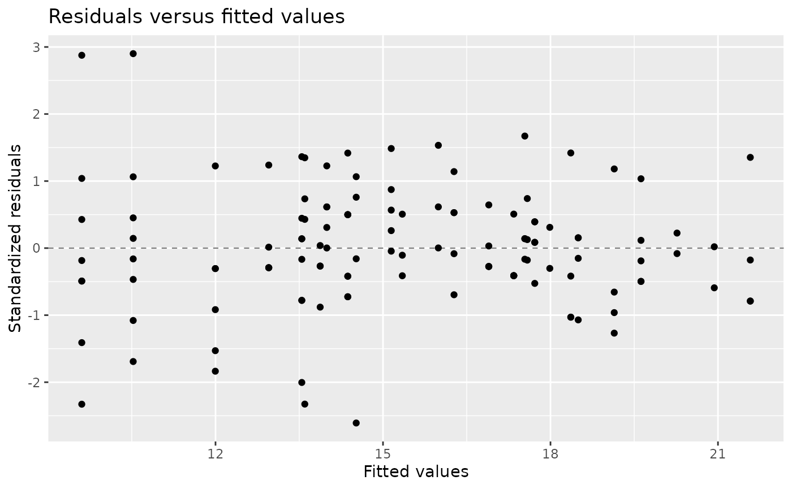
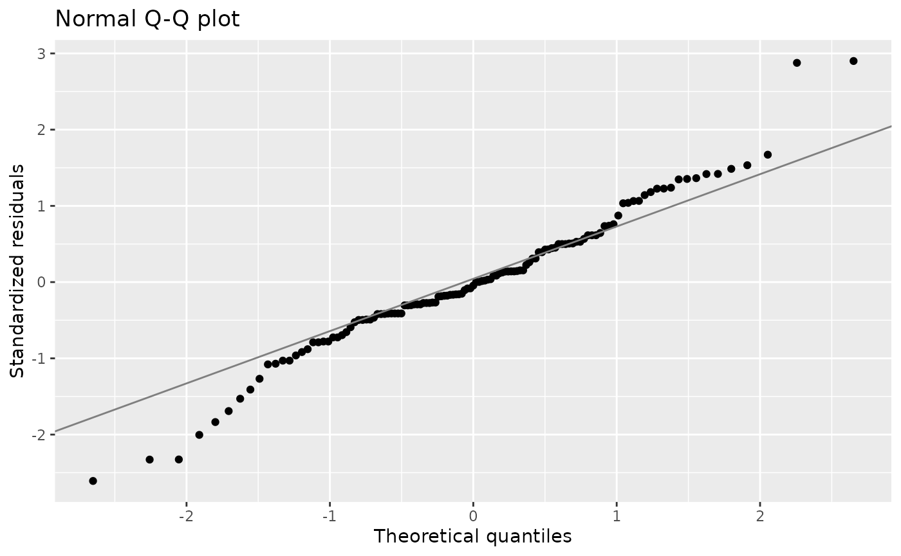
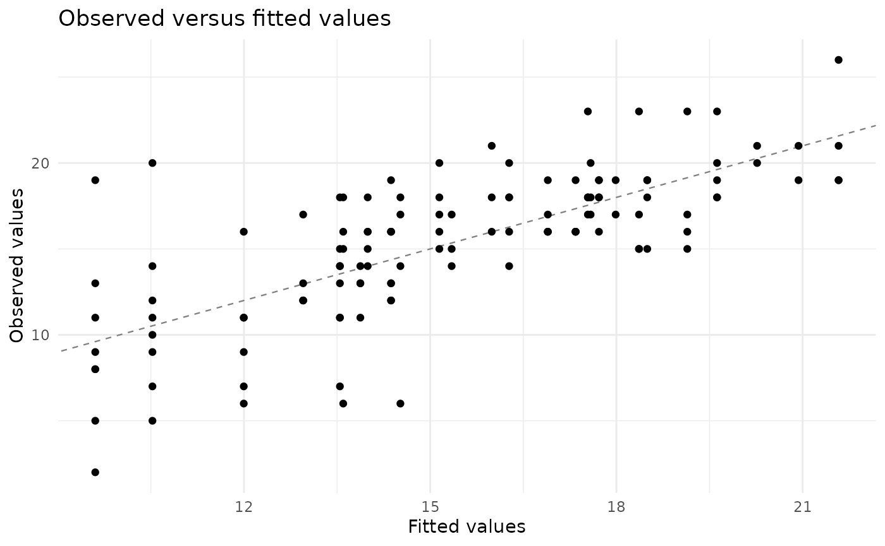

Using lmmix
lmmix.RmdModel scope
lmmix fits Gaussian linear mixed models with random
effects, structured residual covariance, or both components in the same
model. The package directly optimizes a profiled ML or REML objective
and does not delegate estimation to another mixed-model package.
This vignette focuses on practical use. The mathematical formulation, covariance parameterizations, likelihood criteria, and inference derivations are presented separately in the vignette Estimation and inference in lmmix.
library(lmmix)Prepare the data
The included multicentre data have three treatments,
three measurement occasions, three centers and subjects nested within
center and treatment.
str(multicentre)
#> 'data.frame': 153 obs. of 5 variables:
#> $ Center : Factor w/ 3 levels "R","S","T": 1 1 1 1 1 1 1 1 1 1 ...
#> $ Drug : Factor w/ 3 levels "1","2","3": 1 1 1 1 1 1 1 1 1 1 ...
#> $ Subject: Factor w/ 8 levels "1","2","3","4",..: 1 1 1 2 2 2 3 3 3 4 ...
#> $ Time : Factor w/ 3 levels "1","2","3": 1 2 3 1 2 3 1 2 3 1 ...
#> $ Y : num 17 NA NA 12 14 15 12 11 14 13 ...
colSums(is.na(multicentre))
#> Center Drug Subject Time Y
#> 0 0 0 0 28The fixed, random and repeated formulas jointly determine the
variables used by the analysis. lmm() removes rows that are
incomplete for any of those variables and stores the retained data in
the fitted object.
Fit a combined covariance model
This model contains a random center intercept and an AR(1) residual covariance within subject.
fit <- lmm(
data = multicentre,
formula = Y ~ Drug * Time,
random = ~ 1 | Center,
repeated = ~ Time | Center:Drug:Subject,
structure = "ar1",
method = "REML",
ddf = "satterthwaite"
)
fit
#> Linear mixed model fit by REML
#> Formula: `Y ~ Drug * Time`
#> Random: `~1 | Center`
#> Repeated: `~Time | Center:Drug:Subject` (AR1)
#> Log-likelihood: -245.313
#> Convergence code: 0The three formulas have distinct roles:
| Argument | Role in the fitted model |
|---|---|
formula |
Defines the response and fixed-effects matrix
X
|
random |
Defines the random-effects matrix Z and
grouping factor for G
|
repeated |
Defines the ordering variable and independent blocks
for R
|
For the residual structures other than id, each
repeated-measures group must have at most one observation per ordering
value.
Inspect convergence before inference
The optimizer code and Hessian diagnostic are part of the fitted object.
fit$convergence[c(
"code",
"message",
"optimizer",
"iterations",
"hessian_positive_definite"
)]
#> $code
#> [1] 0
#>
#> $message
#> [1] "relative convergence (4)"
#>
#> $optimizer
#> [1] "nlminb"
#>
#> $iterations
#> [1] 13
#>
#> $hessian_positive_definite
#> [1] TRUEA nonzero convergence code or a non-positive-definite likelihood Hessian requires investigation before interpreting standard errors or denominator degrees of freedom. The fitting function emits a warning in either case.
Fixed effects and type III tests
summary() combines coefficient-level inference, type III
tests, covariance parameters and information criteria.
summary(fit)
#>
#> ── Linear mixed model ──────────────────────────────────────────────────────────
#> Estimation: REML
#> Denominator df: satterthwaite
#> Residual covariance: AR1
#>
#> ── Fixed effects ──
#>
#> # A tibble: 9 × 8
#> Term Estimate `Std Error` Statistic DF `p value` `Conf Low` `Conf High`
#> <chr> <dbl> <dbl> <dbl> <dbl> <dbl> <dbl> <dbl>
#> 1 (Interc… 12.1 1.54 7.83 3.06 4.05e-3 7.21 16.9
#> 2 Drug2 4.76 1.12 4.25 49.8 9.28e-5 2.51 7.02
#> 3 Drug3 3.94 1.12 3.52 49.8 9.39e-4 1.69 6.19
#> 4 Time2 0.921 0.294 3.13 67.5 2.55e-3 0.335 1.51
#> 5 Time3 2.39 0.441 5.42 72.1 7.50e-7 1.51 3.27
#> 6 Drug2:T… -0.143 0.438 -0.326 67.9 7.46e-1 -1.02 0.732
#> 7 Drug3:T… -0.474 0.448 -1.06 68.0 2.94e-1 -1.37 0.421
#> 8 Drug2:T… 0.823 0.666 1.24 72.7 2.21e-1 -0.505 2.15
#> 9 Drug3:T… 0.334 0.644 0.519 73.1 6.05e-1 -0.949 1.62
#> ── Type III tests ──
#> # A tibble: 3 × 5
#> Term `Num DF` `Den DF` Statistic `p value`
#> <chr> <dbl> <dbl> <dbl> <dbl>
#> 1 Drug 2 46.4 11.4 9.23e- 5
#> 2 Time 2 68.5 59.3 1.16e-15
#> 3 Drug:Time 4 68.4 1.35 2.60e- 1
#> ── Covariance parameters ──
#> # A tibble: 3 × 5
#> Group Term Component Estimate `Std Error`
#> <chr> <chr> <chr> <dbl> <dbl>
#> 1 Center (Intercept) var 5.17 5.73
#> 2 Residual ar1 var 10.7 2.14
#> 3 Residual ar1 cor 0.935 0.0169
#> ── Information criteria ──
#> logLik AIC BIC deviance
#> -245.3129 514.6257 548.5655 490.6257Individual components are also available through standard methods.
fixef(fit)
#> (Intercept) Drug2 Drug3 Time2 Time3 Drug2:Time2
#> 12.0523813 4.7647059 3.9411765 0.9210921 2.3922321 -0.1427492
#> Drug3:Time2 Drug2:Time3 Drug3:Time3
#> -0.4735142 0.8233159 0.3342516
vcov(fit)
#> (Intercept) Drug2 Drug3 Time2 Time3
#> (Intercept) 2.36770789 -0.62765704 -0.62765704 -0.04061944 -0.07860349
#> Drug2 -0.62765704 1.25531407 0.62765704 0.04072244 0.07880281
#> Drug3 -0.62765704 0.62765704 1.25531407 0.04072244 0.07880281
#> Time2 -0.04061944 0.04072244 0.04072244 0.08637707 0.08342200
#> Time3 -0.07860349 0.07880281 0.07880281 0.08342200 0.19477318
#> Drug2:Time2 0.03995755 -0.08144488 -0.04072244 -0.08637954 -0.08342678
#> Drug3:Time2 0.04056091 -0.04072244 -0.08144488 -0.08639642 -0.08345945
#> Drug2:Time3 0.07663525 -0.15760561 -0.07880281 -0.08341364 -0.19475700
#> Drug3:Time3 0.07849022 -0.07880281 -0.15760561 -0.08345945 -0.19484566
#> Drug2:Time2 Drug3:Time2 Drug2:Time3 Drug3:Time3
#> (Intercept) 0.03995755 0.04056091 0.07663525 0.07849022
#> Drug2 -0.08144488 -0.04072244 -0.15760561 -0.07880281
#> Drug3 -0.04072244 -0.08144488 -0.07880281 -0.15760561
#> Time2 -0.08637954 -0.08639642 -0.08341364 -0.08345945
#> Time3 -0.08342678 -0.08345945 -0.19475700 -0.19484566
#> Drug2:Time2 0.19210287 0.08639556 0.18498607 0.08345780
#> Drug3:Time2 0.08639556 0.20075228 0.08339410 0.19311444
#> Drug2:Time3 0.18498607 0.08339410 0.44392008 0.19471919
#> Drug3:Time3 0.08345780 0.19311444 0.19471919 0.41428424
anova(fit)
#> Type III tests with satterthwaite degrees of freedom
#> # A tibble: 3 × 5
#> Term `Num DF` `Den DF` Statistic `p value`
#> <chr> <dbl> <dbl> <dbl> <dbl>
#> 1 Drug 2 46.4 11.4 9.23e- 5
#> 2 Time 2 68.5 59.3 1.16e-15
#> 3 Drug:Time 4 68.4 1.35 2.60e- 1
confint(fit)
#> Lower Upper
#> (Intercept) 7.2059109 16.8988517
#> Drug2 2.5140873 7.0153244
#> Drug3 1.6905579 6.1917950
#> Time2 0.3345435 1.5076408
#> Time3 1.5124810 3.2719833
#> Drug2:Time2 -1.0173805 0.7318821
#> Drug3:Time2 -1.3675896 0.4205612
#> Drug2:Time3 -0.5046493 2.1512811
#> Drug3:Time3 -0.9485017 1.6170050anova() currently performs type III fixed-effect tests
for one model. It does not compare nested models. Satterthwaite and
residual denominator degrees of freedom are implemented. Kenward-Roger
inference is not implemented.
Covariance parameters and random effects
VarCorr() returns the estimated covariance components on
their natural scale. ranef() returns empirical BLUPs as a
tibble.
VarCorr(fit)
#> # A tibble: 3 × 5
#> Group Term Component Estimate `Std Error`
#> <chr> <chr> <chr> <dbl> <dbl>
#> 1 Center (Intercept) var 5.17 5.73
#> 2 Residual ar1 var 10.7 2.14
#> 3 Residual ar1 cor 0.935 0.0169
ranef(fit)
#> # A tibble: 3 × 2
#> Center `(Intercept)`
#> <chr> <dbl>
#> 1 R 0.901
#> 2 S 1.55
#> 3 T -2.45For a random-slope model, the random-effect covariance is
unstructured. Its variances and correlations appear as separate rows in
VarCorr().
Estimated marginal means
Marginal means use equal weights over nuisance-factor levels. Numeric
covariates not requested in specs are held at their
observed means. This construction targets population marginal means in
the sense of Searle et al. (1980).
lsmeans(fit, ~Drug)
#> # A tibble: 3 × 8
#> Drug Estimate `Std Error` DF Statistic `p value` `Conf Low` `Conf High`
#> <fct> <dbl> <dbl> <dbl> <dbl> <dbl> <dbl> <dbl>
#> 1 1 13.2 1.53 2.98 8.60 0.00339 8.27 18.0
#> 2 2 18.1 1.53 3.01 11.8 0.00128 13.3 23.0
#> 3 3 17.1 1.53 3.01 11.1 0.00154 12.2 21.9
lsmeans(fit, ~Time)
#> # A tibble: 3 × 8
#> Time Estimate `Std Error` DF Statistic `p value` `Conf Low` `Conf High`
#> <fct> <dbl> <dbl> <dbl> <dbl> <dbl> <dbl> <dbl>
#> 1 1 15.0 1.40 2.08 10.7 0.00753 9.16 20.8
#> 2 2 15.7 1.40 2.09 11.2 0.00670 9.90 21.4
#> 3 3 17.7 1.40 2.12 12.6 0.00495 12.0 23.5Pairwise contrast matrices are generated automatically. The
adjust argument is passed to stats::p.adjust()
and therefore adjusts pairwise p-values. The confidence intervals remain
pointwise.
lsmeans(fit, pairwise ~ Drug, adjust = "holm")
#>
#> ── Estimated marginal means ──
#>
#> # A tibble: 3 × 8
#> Drug Estimate `Std Error` DF Statistic `p value` `Conf Low` `Conf High`
#> <fct> <dbl> <dbl> <dbl> <dbl> <dbl> <dbl> <dbl>
#> 1 1 13.2 1.53 2.98 8.60 0.00339 8.27 18.0
#> 2 2 18.1 1.53 3.01 11.8 0.00128 13.3 23.0
#> 3 3 17.1 1.53 3.01 11.1 0.00154 12.2 21.9
#> ── Pairwise contrasts ──
#> # A tibble: 3 × 8
#> Contrast Estimate `Std Error` DF Statistic `p value` `Conf Low` `Conf High`
#> <chr> <dbl> <dbl> <dbl> <dbl> <dbl> <dbl> <dbl>
#> 1 1 - 2 -4.99 1.10 46.1 -4.54 0.000120 -7.20 -2.78
#> 2 1 - 3 -3.89 1.10 46.1 -3.54 0.00183 -6.11 -1.68
#> 3 2 - 3 1.10 1.10 46.9 0.993 0.326 -1.12 3.32Reference values for numeric covariates can be overridden with
at:
When emmeans is installed, lmmix supplies
the required fixed-effects basis and model-specific denominator degrees
of freedom.
emmeans::emmeans(fit, ~Drug)
#> NOTE: Results may be misleading due to involvement in interactions
#> Drug emmean SE df lower.CL upper.CL
#> 1 13.2 1.53 2.98 8.27 18.0
#> 2 18.1 1.53 3.01 13.28 23.0
#> 3 17.1 1.53 3.01 12.18 21.9
#>
#> Results are averaged over the levels of: Time
#> Confidence level used: 0.95Predictions, residuals and tidy output
Conditional fitted values include empirical random effects. Marginal fitted values use fixed effects only.
head(fitted(fit, type = "conditional"))
#> 1 4 5 6 7 8
#> 12.95368 12.95368 13.87477 15.34591 12.95368 13.87477
head(fitted(fit, type = "marginal"))
#> 1 4 5 6 7 8
#> 12.05238 12.05238 12.97347 14.44461 12.05238 12.97347
head(residuals(fit, type = "pearson"))
#> 1 4 5 6 7 8
#> 1.23872457 -0.29195520 0.03833728 -0.10589561 -0.29195520 -0.88007058For predict(fit, newdata), known grouping levels receive
their fitted random effect. New groups receive a random contribution of
zero. Set re.form to a non-NULL value to
request fixed-effects-only predictions.
Diagnostic plots
The S3 method plot.lmm() returns a ggplot2
object. Three diagnostics are available through which:
standardized residuals against fitted values, a normal Q-Q plot, and
observed against fitted values.


Because the returned object is a ggplot, layers and
themes can be added in the usual way.
plot(fit, which = "fitted") +
ggplot2::theme_minimal()
For correlated residual structures, the plotted Pearson residuals are scaled by their marginal residual standard deviations. They are not decorrelated innovations, so residual dependence should also be assessed within the repeated-measures groups.
The generics methods return tibbles.
Printed tables use readable headings without dots, such as
Std Error, p value, Conf Low, and
Conf High. The underlying tibbles retain the standard
broom column names required for programmatic use. Input
column names are preserved by augment() and
ranef().
generics::tidy(fit)
#> # A tibble: 9 × 7
#> Effect Term Estimate `Std Error` Statistic DF `p value`
#> <chr> <chr> <dbl> <dbl> <dbl> <dbl> <dbl>
#> 1 fixed (Intercept) 12.1 1.54 7.83 3.06 0.00405
#> 2 fixed Drug2 4.76 1.12 4.25 49.8 0.0000928
#> 3 fixed Drug3 3.94 1.12 3.52 49.8 0.000939
#> 4 fixed Time2 0.921 0.294 3.13 67.5 0.00255
#> 5 fixed Time3 2.39 0.441 5.42 72.1 0.000000750
#> 6 fixed Drug2:Time2 -0.143 0.438 -0.326 67.9 0.746
#> 7 fixed Drug3:Time2 -0.474 0.448 -1.06 68.0 0.294
#> 8 fixed Drug2:Time3 0.823 0.666 1.24 72.7 0.221
#> 9 fixed Drug3:Time3 0.334 0.644 0.519 73.1 0.605
generics::glance(fit)
#> # A tibble: 1 × 8
#> `Log Lik` AIC BIC Deviance DF `N Obs` Convergence Method
#> <dbl> <dbl> <dbl> <dbl> <int> <int> <int> <chr>
#> 1 -245. 515. 549. 491. 12 125 0 REML
head(generics::augment(fit))
#> # A tibble: 6 × 8
#> Center Drug Subject Time Y Fitted Residual `Std Residual`
#> <fct> <fct> <fct> <fct> <dbl> <dbl> <dbl> <dbl>
#> 1 R 1 1 1 17 13.0 4.05 1.24
#> 2 R 1 2 1 12 13.0 -0.954 -0.292
#> 3 R 1 2 2 14 13.9 0.125 0.0383
#> 4 R 1 2 3 15 15.3 -0.346 -0.106
#> 5 R 1 3 1 12 13.0 -0.954 -0.292
#> 6 R 1 3 2 11 13.9 -2.87 -0.880Alternative model specifications
The same interface covers marginal, random-effects and combined models.
# Marginal model with unstructured repeated-measures covariance
fit_marginal <- lmm(
data,
response ~ treatment * time,
repeated = ~ time | subject,
structure = "un"
)
# Random intercept and slope with independent residuals
fit_random <- lmm(
data,
response ~ treatment + time,
random = ~ 1 + time | subject,
structure = "id"
)
# Combined random intercept and Toeplitz residual covariance
fit_combined <- lmm(
data,
response ~ treatment * time,
random = ~ 1 | center,
repeated = ~ time | center:subject,
structure = "toep"
)Practical limits
The current implementation constructs the full dense matrix
V during optimization. It is appropriate for small and
moderate data sets. It is not a large-scale sparse mixed-model engine.
The interface accepts one random-effects formula and one
repeated-measures structure. Generalized responses, multiple
random-effect terms, Kenward-Roger inference and likelihood-ratio model
comparison are outside the current 0.1.0
implementation.